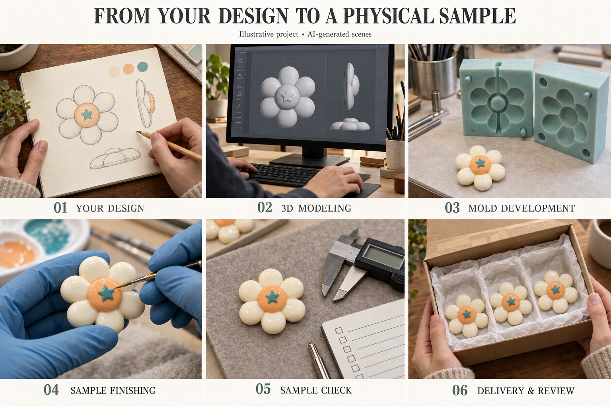

From your idea to a custom craft collection
A shape you sketched. A palette you love. A mix that feels like your brand. Here’s how to turn those details into resin charms or polymer clay pieces, with clear decisions along the way.
Start with your idea ↓
A flatback for a phone case, a drilled focal bead and a polymer sprinkle mix need different specifications. We review resin and polymer clay projects individually, then agree the design, sample route, costs and approval points before work moves forward.
Tell us what you want to make.
You do not need a finished technical drawing to start. A sketch, reference image or existing Qula product link can explain the idea. Add where the piece will go, how it will attach and what matters most: a recognizable silhouette, a delicate pattern, a particular feel or a coordinated color story.
- For resin: show the front, side and back where possible. Give width, height and thickness, raised details, flatback requirements, and any hole diameter, position and direction.
- For polymer clay: describe the pattern, colors and format: slices, sprinkles, beads or a proposed 3D piece. Add size, slice thickness, desired mix proportions and packing unit.
Include estimated quantity, destination market, packaging and target arrival date. Send artwork you own or have permission to use; a reference helps explain a style but does not authorize copying someone else’s design.
Your checkpoint: agree the brief and separate essential details from features you are happy to adjust.
Review the options before committing.
We review whether the design suits the proposed material and process. Fine lines, narrow holes, projecting details and very small patterns may need adjustment. If you are unsure about material, explain the desired result so resin, polymer clay or an acrylic option can be assessed case by case.
An existing design or available mold may be a useful starting point for resin; an existing polymer pattern or mix may also reduce development work. Ask which features can change without starting a completely new design.
The quotation should identify the minimum order quantity, unit and packaging basis, development or tooling fees, sample charges, revision scope, payment stages and shipping assumptions. Timelines are project-specific; allow separately for development, your review, production and transit.
Your checkpoint: approve the proposed scope and relevant charges before chargeable development begins. Mold ownership, storage, reuse and exclusivity need a written agreement; they are not automatic.
Check shape, scale and color direction.
Depending on the item, the review may use an annotated drawing, artwork layout, color reference or digital model. A new dimensional resin charm may benefit from a 3D model. Polymer slice patterns may be clearer in a flat layout. Not every project needs every proof format.
Check dimensions rather than judging scale from the screen. For resin, confirm relief depth, the back and attachment details. For polymer, review pattern clarity, color placement, slice size and the proposed mix. Flag any surface effect or finish that needs a physical check.
Your checkpoint: approve the correct file version for the next stage. A screen proof sets design direction; it cannot establish the finished material’s color, texture, gloss or fit.
Two materials. Different sample journeys.
We agree what the sample is intended to prove and which operations it includes. Tooling, prototype and sample stages can occur in different sequences, depending on the process.
From form to a finished charm
For a new molded shape, the agreed route may include a master or model, mold development, forming, finishing and decoration. Existing-mold projects may follow a shorter route. Review the silhouette, raised details, thickness, flatback contact area, hole position, color and surface finish.
Try the sample with your intended fitting or adhesive and application. A photograph helps with appearance, but it cannot confirm attachment strength, handling or exact dimensions.
Explore resin customization →From pattern to a consistent piece or mix
Slice projects may involve pattern or cane development, forming, curing, slicing and sorting, with the sequence chosen for the item. Beads and 3D pieces can need a different forming and finishing approach. Do not assume a resin-style mold or digital model is required.
Check pattern definition, color, size, slice thickness, edges and breakage. For a mix, agree the ratio basis, such as weight or piece count, and review a representative packed sample. Where pieces meet another material, test that exact combination in your intended use.
Explore polymer clay customization →Your checkpoint: confirm whether you need a physical sample, how it will be delivered and which unresolved details must wait for that review.
Make feedback specific.
Gather comments in one list, using marked photos and measurements. “Move the hole toward the top” is clearer with a location marked on the drawing. For polymer mixes, name the colors or shapes to adjust and the revised proportions rather than asking for “more balance.”
We review the requested changes and confirm any new sample, tooling cost or timing before proceeding. Keep version numbers clear so an earlier photo cannot be mistaken for the approved design.
Your checkpoint: approve the identified sample and specification in writing, including acceptable tolerances, color reference, finish, mix, assembly and packaging. Confirm final commercial terms and any remaining requirements before production is authorized.
Define what needs to be checked.
The approved specification becomes the reference for production and the agreed inspection plan. Resin checks may cover dimensions, surface defects, painted details, hole placement and back finish. Polymer checks may cover pattern clarity, size and thickness variation, damaged pieces, mix proportions and pack weight or count.
Agree how checks are recorded and whether you need sample photos, a pre-shipment review or an independent inspection. Request any destination-market documentation early for the exact SKU, material and intended use; availability and applicability must be confirmed. A general report does not establish suitability for every custom design.
Your checkpoint: resolve discrepancies against the approved reference and complete any agreed release requirements before shipment.
Give packaging the same attention as the piece.
Confirm whether items are packed separately, mixed, bulk-bagged or supplied in branded retail packs. Specify quantity or weight per pack, labels, SKU names and artwork. Delicate details may need protection; mixed components may need separation. Review the packed sample when presentation or damage prevention is important.
Before dispatch, verify the delivery address, shipping method, freight charges, agreed delivery terms and required shipment documents. Separate the production estimate from transit and customs time when planning your launch.
Your checkpoint: approve packing and shipping details, then keep the shipment reference with your order records.
Turn arrival feedback into a better next order.
On arrival, compare the goods with the approved sample and packing list. Photograph any damage or discrepancy, retain packaging where relevant and contact us with the order reference and affected quantities so we can review it.
For a reorder, reference the approved version and identify changes to colors, quantity, mix or packaging. We reconfirm pricing, material availability, any tooling condition or replacement needs, and lead time. If the specification changes, agree which details need a new proof or sample.
Your checkpoint: confirm whether the next order repeats the approved design or starts a revised version.
What to send with your inquiry
- Your sketch, reference or Qula product link
- Intended use, material preference and destination market
- Dimensions, colors and the details that matter most
- Resin: relief, back, hole and finish requirements
- Polymer: pattern, format, thickness and mix proportions
- Quantity, packing, sample needs and target arrival date
Still deciding? Tell us what is fixed and what is flexible. We can review a direction before you prepare a full specification.
A few common questions
Can I start with a sketch instead of a 3D file?
Yes. Send a clear sketch or reference with dimensions and intended use. We will confirm whether an annotated drawing, artwork layout, digital model or physical reference is needed for your project.
Does every custom project need a new mold?
No. An available resin mold may suit some projects, while polymer slices, mixes and shaped pieces follow item-specific processes. We confirm any tooling requirement and cost before you approve that work.
Can you quote a fixed MOQ and sample lead time?
MOQ, sample fees and timing depend on the design, material, colors, process, quantity and packaging. Ask for a project-specific quotation with separate development, production and shipping estimates.
Will the sample color match my screen?
Screens, lighting and material finishes change how color appears. Share your color reference and confirm the physical material sample when color is important; a digital proof alone is not a color guarantee.